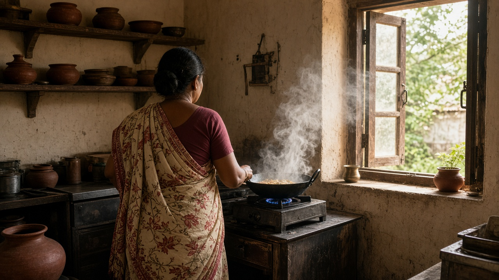
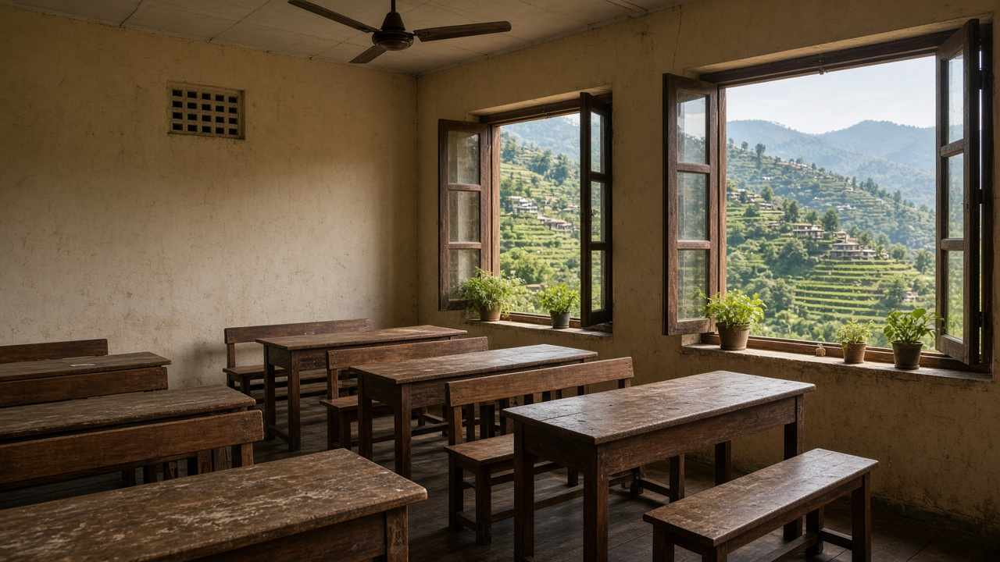

Indoor Air Quality and Ventilation
Published on August 20, 2026
Indoor air quality refers to the condition of air within buildings and structures where people spend most of their time. Common indoor pollutants include particulate matter from cooking and heating, volatile organic compounds released by paints and furniture, carbon monoxide from faulty combustion appliances, radon seeping from soil, and biological contaminants such as mold spores and dust mites. Because indoor spaces are often enclosed, pollutant concentrations can exceed outdoor levels even in cities with severe ambient air pollution. Ventilation, the exchange of indoor air with outdoor air, is the primary mechanism for diluting and removing these contaminants, yet many homes and workplaces lack adequate airflow due to energy-efficient sealing and limited window opening.
Health effects of poor indoor air quality range from immediate irritation of eyes and airways to long-term respiratory disease and cancer. Cooking with solid fuels on open fires or inefficient stoves produces high PM2.5 levels that particularly harm women and children in low-income households. Formaldehyde and other VOCs from building materials off-gas for months after construction, contributing to sick building syndrome symptoms such as headaches, fatigue, and difficulty concentrating. Radon is the second leading cause of lung cancer after smoking in many countries, accumulating in basements and ground-floor rooms without detection. CO2 buildup in poorly ventilated classrooms and offices reduces cognitive performance, demonstrating that indoor air quality affects productivity as well as health.
Improving indoor air requires source control, ventilation, and filtration working together. Clean cooking technologies such as electric induction stoves and improved biomass cookstoves with chimneys reduce primary emissions at the source. Mechanical ventilation systems with heat recovery exchange stale indoor air for fresh outdoor air while minimizing energy loss. High-efficiency particulate air filters and activated carbon units remove particles and gases from recirculated air in hospitals, schools, and homes. Building codes that mandate minimum ventilation rates, low-emission materials, and radon-resistant construction protect occupants from the start. Regular maintenance of HVAC systems and moisture control to prevent mold growth are essential practices for sustaining healthy indoor environments over time.

भित्री वायु गुणस्तर भनेको मानिसहरूले धेरै समय बिताउने भवन र संरचनाभित्रको हावाको अवस्था हो। पकाउने र तताउने कामबाट कण पदार्थ, पेन्ट र फर्निचरबाट अस्थिर कार्बनिक यौगिक, बिग्रेको दहन उपकरणबाट कार्बन मोनोअक्साइड, माटोबाट रेडन र ढुसी र धुलो कीट जस्ता जैविक प्रदूषक सामान्य भित्री प्रदूषक हुन्। भित्री स्थान प्रायः बन्द भएकाले, गम्भीर बाहिरी प्रदूषण भएका शहरमा पनि भित्री सांद्रता बाहिरी भन्दा बढी हुन सक्छ। वेन्टिलेसन, अर्थात् भित्री हावालाई बाहिरी हावासँग बदल्ने प्रक्रिया, यी प्रदूषक फैलाउने र हटाउने मुख्य तरिका हो, तर धेरै घर र कार्यालयमा उर्जा-किफायती बन्द र सीमित झ्याल खोलाइका कारण पर्याप्त हावा प्रवाह हुँदैन।
खराब भित्री हावाले आँखा र श्वास मार्ग चिढ्नु देखि दीर्घकालीन श्वास रोग र क्यान्सरसम्म प्रभाव पार्छ। खुला आगो वा असमर्थ चुलोमा पकाउँदा PM2.5 बढ्छ, जसले कम आय भएका परिवारका महिला र बालबालिकालाई विशेष हानि पुर्याउँछ। निर्माण सामग्रीबाट फर्माल्डिहाइड र अन्य VOC महिनौंसम्म निस्किन्छ, जसले थकान, टाउको दुखाइ र ध्यान केन्द्रित गर्न गाह्रो जस्ता लक्षण पैदा गर्छ। रेडनले धेरै देशमा धूमपानपछि फोक्सो क्यान्सरको दोस्रो प्रमुख कारण हो, जुन तहखाना र तल्ला कोठाहरूमा जम्मा हुन्छ। CO2 ले खराब वेन्टिलेसन भएका कक्षा र कार्यालयमा संज्ञानात्मक प्रदर्शन घटाउँछ, जसले भित्री वायु गुणस्तरले स्वास्थ्य मात्र होइन, उत्पादकतामा पनि असर गर्छ भनी देखाउँछ।
भित्री हावा सुधारका लागि स्रोत नियन्त्रण, वेन्टिलेसन र फिल्ट्रेसन एकसाथ चाहिन्छ। विद्युतीय इन्डक्सन चुलो र चिम्नीसहित सुधारिएका जैविक इन्धन चुलोले मूल उत्सर्जन स्रोतमै घटाउँछ। ताप पुनः प्राप्तिसहित यान्त्रिक वेन्टिलेसनले उर्जा गुमाउँदै पुरानो भित्री हावालाई ताजा बाहिरी हावासँग बदल्छ। HEPA फिल्टर र सक्रिय कार्बन एकाइले अस्पताल, विद्यालय र घरमा पुनः प्रचालित हावाबाट कण र ग्यास हटाउँछ। न्यूनतम वेन्टिलेसन दर, कम-उत्सर्जन सामग्री र रेडन-प्रतिरोधी निर्माण तोक्ने भवन कोडले सुरुदेखि बासिन्दालाई सुरक्षित राख्छ। HVAC प्रणालीको नियमित मर्मतसम्भार र ढुसी रोक्न नमी नियन्त्रण समयसँगै स्वस्थ भित्री वातावरण कायम राख्न आवश्यक अभ्यास हुन्।

भीतरी वायु गुणस्तर इमारतों और संरचनाओं के अंदर की हवा की स्थिति को दर्शाता है, जहाँ लोग अधिकांश समय बिताते हैं। पकाने और गर्म करने से कण पदार्थ, पेंट और फर्नीचर से अस्थिर कार्बनिक यौगिक, खराब दहन उपकरणों से कार्बन मोनोऑक्साइड, मिट्टी से रेडन और फफूंद के बीज व धूलि कीट जैसे जैविक प्रदूषक सामान्य भीतरी प्रदूषक हैं। भीतरी स्थान अक्सर बंद होने से प्रदूषकों की सांद्रता गंभीर बाहरी प्रदूषण वाले शहरों में भी बाहरी स्तर से अधिक हो सकती है। वेंटिलेशन, अर्थात् भीतरी हवा को बाहरी हवा से बदलना, इन प्रदूषकों को पतला करने और हटाने का मुख्य तरीका है, पर ऊर्जा-कुशल बंदीकरण और सीमित खिड़की खोलने के कारण कई घरों और कार्यस्थलों में पर्याप्त वायु प्रवाह नहीं होता।
खराब भीतरी हवा से आँख और श्वास मार्ग में तुरंत जलन से लेकर दीर्घकालीन श्वसन रोग और कैंसर तक प्रभाव पड़ते हैं। खुली आग या अकुशल चूल्हे पर ठोस ईंधन से पकाने से PM2.5 बढ़ता है, जो कम आय वाले परिवारों की महिलाओं और बच्चों को विशेष रूप से नुकसान पहुँचाता है। निर्माण सामग्री से फॉर्मल्डिहाइड और अन्य VOC महीनों तक निकलते रहते हैं, जिससे थकान, सिरदर्द और ध्यान केंद्रित करने में कठिनाई जैसे लक्षण होते हैं। रेडन कई देशों में धूम्रपान के बाद फेफड़े के कैंसर का दूसरा प्रमुख कारण है, जो तहखानों और तल के कमरों में जमा होता है। CO2 खराब वेंटिलेशन वाली कक्षाओं और कार्यालयों में संज्ञानात्मक प्रदर्शन घटाता है, जिससे पता चलता है कि भीतरी वायु गुणस्तर स्वास्थ्य के साथ-साथ उत्पादकता को भी प्रभावित करता है।
भीतरी हवा सुधार के लिए स्रोत नियंत्रण, वेंटिलेशन और फ़िल्ट्रेशन एक साथ चाहिए। विद्युत इंडक्शन चूल्हे और चिमनी वाले सुधारित जैविक ईंधन चूल्हे मूल उत्सर्जन को स्रोत पर कम करते हैं। ऊष्मा पुनर्प्राप्ति वाली यांत्रिक वेंटिलेशन ऊर्जा हानि कम करते हुए पुरानी भीतरी हवा को ताजी बाहरी हवा से बदलती है। HEPA फ़िल्टर और सक्रिय कार्बन इकाइयाँ अस्पताल, स्कूल और घरों में पुनः प्रचालित हवा से कण और गैस हटाती हैं। न्यूनतम वेंटिलेशन दर, कम-उत्सर्जन सामग्री और रेडन-प्रतिरोधी निर्माण निर्धारित करने वाले भवन कोड शुरुआत से ही निवासियों की रक्षा करते हैं। HVAC प्रणाली का नियमित रखरखाव और फफूंद रोकने के लिए नमी नियंत्रण समय के साथ स्वस्थ भीतरी वातावरण बनाए रखने के लिए आवश्यक अभ्यास हैं।